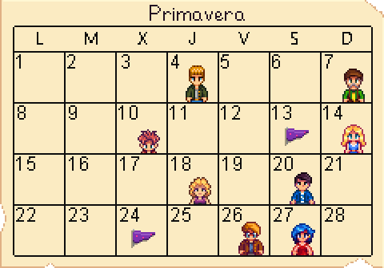

Hay cuatro Estaciones en Stardew Valley: Primavera, Verano, Otoño, e Invierno. Cada estación dura 28 días. Tras completar un ciclo de estaciones, el juego avanza un año cuando vuelve a empezar la primavera. Cada estación tiene su propio estilo visual. La mayoría de los cultivos, artículos de recolección y peces sólo están disponibles durante su estación o estaciones concretas. La selección de semillas disponible en la Tienda Local Pierre's (o MercaJoja) cambia cada estación.
Festivales:
Día 13
Día 24
Festivales:
Día 11
Día 28
Festivales:
Día 16
Día 27
Festivales:
Día 8
Días 15-17
Día 25